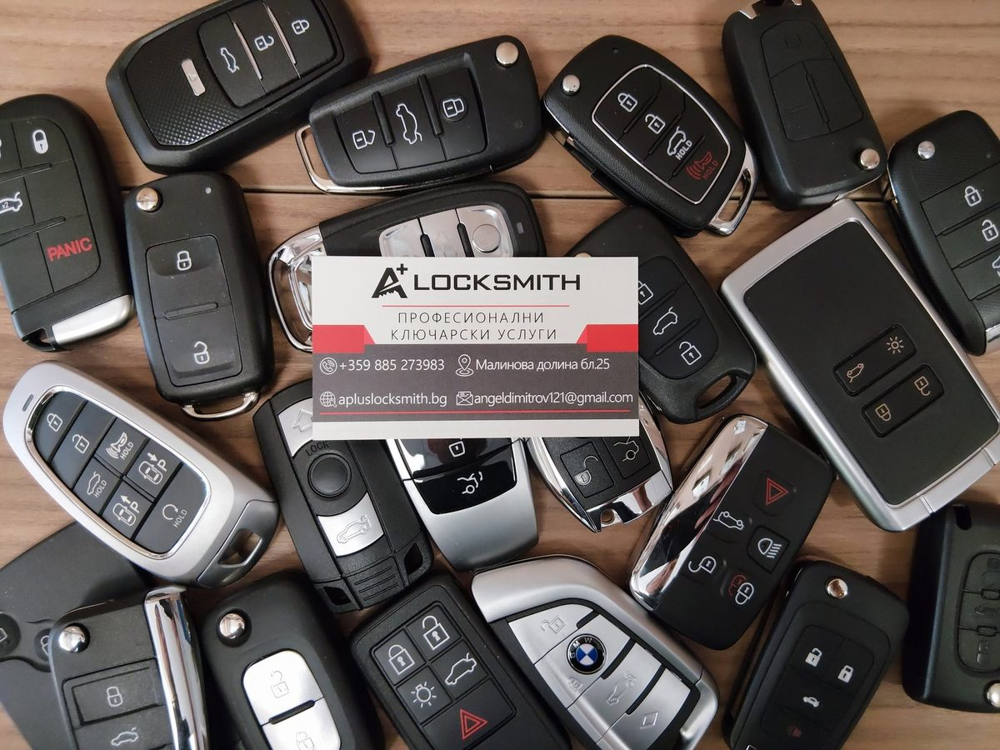

Как се прави ключ за кола — какво стои зад изработката и защо отнема време
Металното острие е само началото. Зад всеки съвременен автомобилен ключ стои електроника, криптиране и разговор с имобилайзера на колата — без който двигателят не пали, колкото и точно да е нарязано острието.

Накратко: изработката на автомобилен ключ е две отделни работи, слепени в една. Първата е механична — острие по заводски код. Втората е електронна — нов транспондер, който трябва да бъде приет от имобилайзера на конкретната кола по криптиран протокол. Втората половина не се вижда, отнема повечето време и е причината една кола да стане за половин час, а друга — за половин ден.
Ключът отдавна не е парче метал
При обикновения ключ задачата е една: формата да съвпадне. Затова копието става за минути. При автомобилния ключ формата е най-лесната част — всичко останало е електроника, нарочно направена да не допуска чужди ключове. Това ѝ е работата и тя я върши добре.
Острието
Физическото рязане е началото. То се прави по заводски код на автомобила, а не чрез копиране на съществуващ ключ. Разликата е съществена: копието наследява износването на оригинала, докато рязането по код връща точните фабрични размери на резките. Затова новият ключ често върви по-гладко от стария.
Транспондерът
В дръжката стои чип, който при пускане на ключа отговаря на запитване от колата с криптиран сигнал. Не съвпадне ли отговорът — двигателят не пали. Това не е допълнителна екстра, а централната защита срещу кражба, и тя работи еднакво добре срещу крадеца и срещу бързото решение.
Дистанционното
Заключването и отключването е трета, отделна система, с друга честота и друга логика. Затова се случва ключът да пали, но да не заключва — или обратното. Трите части се програмират поотделно.
Какво значи колата да приеме ключа
Най-подценяваната стъпка. Новият транспондер не се „настройва“ — той трябва да бъде записан в самата кола, в имобилайзера или в модула, който отговаря за достъпа. За да стане това, оборудването първо трябва да убеди колата, че има право да пише в нея.
При по-старите системи това е кратка процедура. При по-новите — BDC при BMW, последните поколения на Volkswagen Group и подобните им — достъпът минава през защитени протоколи, където всяка стъпка се проверява. Как изглежда това на практика сме описали в случая с BMW M8 и BDC3.
Откъде идва времето
Идентификация на точния вариант
Марка, модел и година не стигат. Един и същ модел от една и съща година може да е с различен модул според пазара, месеца на производство или комплектацията. Сгрешената идентификация значи сгрешена процедура, а сгрешената процедура при имобилайзер не е безобидна.
Правилната заготовка и правилният чип
Острието трябва да е от точния профил, а чипът — от типа, който тази кола очаква. Това е склад, не импровизация, и е една от причините някои работи да стават веднага, а други да чакат доставка.
Процедурата в самата кола
Тук идва нещо, което изненадва почти всеки клиент: при редица марки има заложено изчакване. Колата нарочно не отговаря веднага — изчаква определено време, преди да позволи достъп до системата за ключове. Понякога са минути, понякога доста повече. Никакво оборудване не може да го прескочи, защото точно това му е предназначението: да направи кражбата бавна.
Проверката накрая
След записването следва изпитание на място: двигателят трябва да пали стабилно и повторно, дистанционното да заключва и отключва, при смарт ключ колата да разпознава ключа без прекъсвания, а старите ключове да продължат да работят — освен ако изрично не поискате да бъдат изтрити.
Когато няма нито един ключ
Това е друга работа, не по-дълга версия на същата. При добавяне на втори ключ колата вече има от какво да тръгне. При изгубени всички ключове тя няма — и тогава информацията идва от самия модул, понякога с демонтаж и работа по платката.
Изпълнимо е на място, без теглене до сервиз — при тази Kia Niro клиентът остана без нито един работещ ключ, а при тази Toyota Sequoia изработихме ключа на адрес. Но е редно да се знае предварително, че този сценарий е същностно различен от „искам още един ключ“.
Две различни занаятчийски задачи
При копирането на обикновен ключ се възпроизвежда форма. При автомобилния се договаря доверие между две електронни системи — и това е друга дисциплина, с друго оборудване и друга подготовка.
Оборудването, лицензите и базите данни, с които се работи, се поддържат постоянно: всяка нова година автомобили носи нови протоколи, а миналогодишната версия не ги познава. Затова съвременното автоключарство стои по-близо до работата с автомобилна електроника, отколкото до рязането на ключове.
Какво ускорява работата
Няколко неща зависят от вас и наистина съкращават времето:
- Носете всички налични ключове, дори неработещите. При част от системите добавянето на нов изисква присъствието на старите.
- Пригответе документите за собственост — големият талон и лична карта. Без тях не се работи, и това е във ваша полза.
- Кажете предварително какво точно се е случило — изгубен ключ, счупен, изпран или мокрен. Сценариите са различни; виж например какво правим с изпран ключ.
- Споменете, ако колата не пали или не отключва — от това зависи дали идваме при вас, или колата идва при нас.
- Обадете се предварително с данните на колата. Проверката дали системата е покрита отнема минути по телефона и спестява разкарване.
Често задавани въпроси
Каква е разликата между ключ за врата и ключ за кола?
Ключът за врата отваря механичен патрон — колкото по-точно е изрязан, толкова по-добре пасва. Автомобилният ключ освен това трябва да комуникира с електрониката на колата: имобилайзер, комфорт модул или домейн контролер. Без тази комуникация двигателят не пали, дори вратата да се отваря.
Какво е транспондер в автомобилния ключ?
Транспондерът е малък чип в дръжката на ключа, който изпраща криптиран сигнал към имобилайзера на автомобила. Ако сигналът не съвпада, двигателят не пали — независимо дали металното острие пасва в контакта.
Какво е имобилайзер и как работи?
Имобилайзерът е електронна защита в автомобила, която блокира запалването и горивната система при непознат ключ. При всяко пускане той проверява криптирания сигнал на транспондера и разрешава стартирането само при съвпадение.
Може ли ключ за кола да се направи само по металното острие?
Не. Дори идеално нарязан ключ без програмиран транспондер ще отвори вратата, но двигателят няма да пали. Кодирането на чипа към конкретния автомобил е задължителната втора половина от работата.
Може ли да се направи ключ за кола без оригинален ключ?
Да, в повечето случаи — острието по заводски код, а транспондерът със специализирана диагностика. При част от по-новите системи се налага по-дълбока работа по модула, а при някои — и комуникация с производителя.
Какво е смарт ключ и как се различава от обикновения?
Смарт ключът не се поставя в контакт — автомобилът го разпознава безжично и позволява стартиране с бутон. Комуникацията е по-сложна, с повече стъпки на проверка, и изисква съответното оборудване за програмиране.
Колко ключа може да има програмирани към един автомобил?
Зависи от системата. При повечето модели се програмират между два и осем ключа. При част от системите добавянето на нов изисква присъствието на всички съществуващи — затова ги носете всичките.
Какво се случва, ако изгубя всички ключове на колата?
Тогава работата се мести на друго ниво: четене на данни от модула, понякога с демонтаж и работа по платката. Изпълнимо е на място, без теглене до сервиз, но отнема съществено повече време от добавянето на втори ключ.
Мога ли да поръчам ключ за кола онлайн и после да го програмирам?
Самата заготовка може да се поръча, но програмирането изисква физически достъп до автомобила и специализирано оборудване. Внимавайте и с какво поръчвате — неподходящ или клониран чип често се оказва причината една иначе рутинна процедура да не тръгне.
Всеки автоключар ли може да направи ключ за всяка кола?
Не. По-новите системи изискват специализирано оборудване и актуални лицензи, които не всеки поддържа. При премиум марки и най-новите поколения е редно да се провери предварително дали конкретната система е покрита — това спестява разкарване и на двете страни.
Имате подобен случай?
Обадете се за оглед или консултация — работим в София с посещение на адрес.